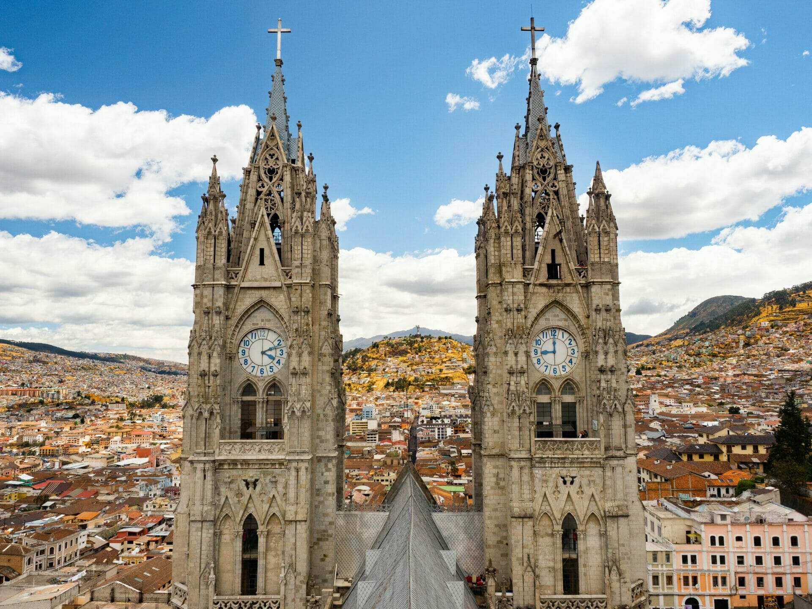

АКТУЕЛНА ПОНУДА

КИТО И ГАЛАПАГОС
Кито и Галапагос, Еквадор
19.07 - 29.07
Откријте ја неверојатната разновидност на Еквадор, од историскиот Кито високо во Андите до уникатните острови Галапагос. Уживајте во спектакуларните планински пејзажи, тропската природа и неверојатниот животински свет. Патувањето е совршена комбинација од култура, природа, авантура и релаксација.
ЈУЖНОАМЕРИКАНСКА АВАНТУРА
Главниот град на Еквадор, сместен високо во Андите и познат по својот добро зачуван историски центар. Градот плени со колонијална архитектура, импресивни цркви и живописни плоштади, а прошетката низ старите улици нуди можност за запознавање со богатата култура и историја на Еквадор.
Уникатен островски архипелаг познат по својата неверојатна природа и богат животински свет. Галапагос нуди можност за набљудување на морски игуани, птици и други карактеристични животни, како и уживање во вулканските пејзажи, кристално чистото море и прекрасните островски предели.
Еден од најпознатите вулкани во Еквадор и главна природна атракција на истоимениот национален парк. Областа е препознатлива по импресивните планински пејзажи, вулканските предели и прекрасните погледи, што ја прават идеална за прошетки, фотографирање и уживање во природата.
Живописен град познат по својот традиционален пазар и богатото културно наследство. Отавало нуди локални ракотворби, текстил и сувенири, како и можност за запознавање со традициите и начинот на живот на домородното население во регионот.
Состанок со групата на аеродром во Скопје, 2 часа пред летот. Следува диретен лет до Кито, па диретен лет до Галапагос и пристигнување на аеродром. По завршувањето на аеродромските процедури следува организиран трансфер до хотелот и сместување. По сместувањето следува време за одмор и освежување. Попладнето е предвидено за прва прошетка во околината и запознавање со градот. Вечерта е слободна за вечера и индивидуални активности. Ноќевање во хотел.
Појадок во хотелот и организирано разгледување на историскиот центар на Кито. Следува посета на Плоштадот на независноста, Базиликата и црквата Ла Компанија. Програмата продолжува со прошетка низ старите градски улици и слободно време за кафе, ручек и фотографирање. Попладнето е предвидено за уште малку слободно време во градот. Вечерта е слободна за одмор и индивидуални активности. Ноќевање во хотел.
Појадок и организирано заминување кон Галапагос. По пристигнувањето следува сместување и запознавање со островската околина. Предвидена е прошетка покрај брегот и можност за набљудување на морскиот живот. Потоа следува слободно време за одмор, кафе и индивидуално истражување. Вечерта е слободна за уживање во островската атмосфера. Ноќевање во хотел.
Појадок и организирана посета на природните предели на Галапагос. Следува прошетка низ островската природа со можност за набљудување на морски игуани, птици и други карактеристични животни. Програмата продолжува со време за фотографирање и уживање во уникатните вулкански пејзажи. Потоа следува слободно време за одмор и индивидуални активности. Вечерта е слободна. Ноќевање во хотел.
Појадок и организирана морска екскурзија околу островите. Следува пловење низ чистите води на Галапагос и можност за пливање и сноркелинг. Патниците ќе имаат можност да го набљудуваат богатиот морски свет и шарените риби. Во текот на денот е предвидено време за релаксација и фотографирање. По завршувањето на турата следува враќање во хотелот. Ноќевање во хотел./p>
Појадок и организирано тргнување кон една од природните атракции на островот. Следува посета на вулкански формации, крајбрежни предели и места погодни за фотографирање. Патниците ќе имаат слободно време за прошетка, одмор и уживање во природата. Попладнето е предвидено за враќање и индивидуални активности. Вечерта е слободна за прошетка покрај брегот. Ноќевање во хотел.
Појадок и организирано тргнување кон Националниот парк Котопакси. Следува уживање во погледите кон познатиот вулкан Котопакси и околните планински предели. Предвидено е време за прошетка, фотографирање и одмор во природата. По посетата следува организирано враќање кон Кито. Вечерта е слободна за одмор. Ноќевање во хотел.
Појадок и организирано тргнување кон Отавало. Следува посета на познатиот локален пазар и прошетка низ градот. Патниците ќе имаат можност за купување традиционални ракотворби и сувенири. Програмата продолжува со посета на околните природни предели и слободно време за ручек. Во попладневните часови следува враќање кон Кито. Ноќевање во хотел.
Појадок во хотелот и слободен ден за индивидуално уживање во Кито. Патниците можат да го искористат денот за прошетка, шопинг, посета на места по сопствен избор и дегустација на локалната кујна. Предвидено е доволно слободно време за последни фотографии и купување сувенири. Вечерта е слободна за одмор и последно уживање во атмосферата на градот. Ноќевање во хотел.
Појадок во хотелот и одјавување согласно предвиденото време. По собирањето на багажот следува организиран трансфер до аеродромот. По пристигнувањето следува пријавување за летот и завршување на потребните аеродромски процедури. Потоа следи директен лет до Кито , па диретен лет до Скопје. По пристигнувањето и преземањето на багажот завршува организираното патување.